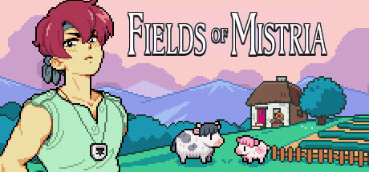
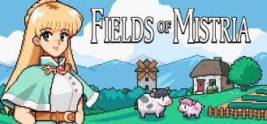
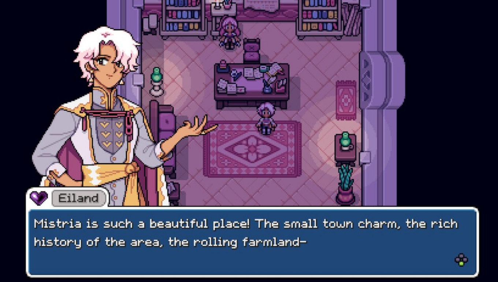
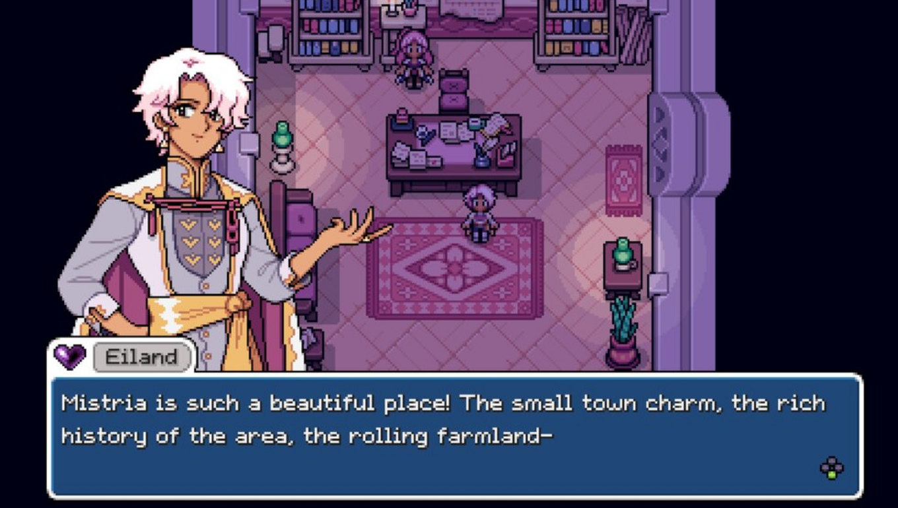

Fields of Mistria

R$44,50
LISTA DE DESEJO +
COMPRAR

Analises: Extremamente Positivas
Lançamento: 05/ago/2024
Desenvolvedor: NPC Studio
Desenvolvedor: NPC Studio
Indie
Simulador
Single Player
RPG
Portugues (Brasil) - Indisponível
Ingles
Espanhol
Prepare-se para começar uma vida completamente nova em um mundo repleto de possibilidades!
Misteria, uma vila idílica aninhada entre a floresta e o mar, oferece a você uma propriedade rural abandonada, mas cheia de potencial, em troca da sua ajuda.
Restaure a vila à sua antiga glória após um terremoto devastar tudo e uma estranha magia começar a fluir pela terra. Neste sucessor espiritual dos RPGs de simulação de fazenda do final dos anos 90 e posteriores, construa a fazenda dos seus sonhos enquanto descobre magia, romance e aventura!
Requsitos Minimos
Requer um processador e sistema operacional de 64 bits
SO: Windows 10
Processador: Intel Core2 Duo E6400 or AMD Phenom X2 Dual-Core GP-7730
Memória: 6 GB de RAM
Placa de vídeo: NVIDIA GeForce GTX 460, 1GB or AMD Radeon R7 240, 1GB
DirectX: Versão 11
Armazenamento: 2 GB de espaço disponível
Requisitos Recomendados
Requer um processador e sistema operacional de 64 bits
SO: Windows 10
Processador: Ryzen 3 3300X
Memória: 8 GB de RAM
Placa de vídeo: RX 480, 8 GB
DirectX: Versão 11
Armazenamento: 2 GB de espaço disponível
 
